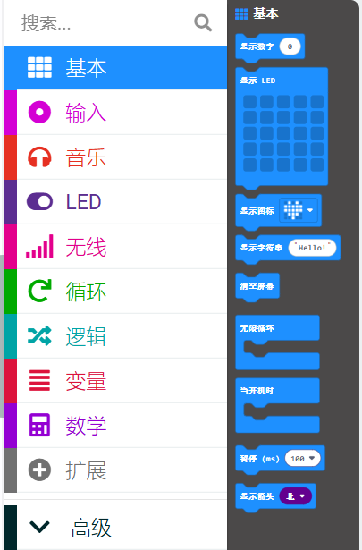

In MicroBit programming, the Basic module contains several important blocks that allow you to control basic functions and actions. These blocks are essential for building interactive projects and controlling the MicroBit’s hardware components.
Some of the key blocks in the Basic module include:
- Show Number: Displays a number on the MicroBit's LED display.
- Show String: Displays a string of text on the LED display.
- Pause: Pauses the program for a specified amount of time (in milliseconds).
- Clear Screen: Clears the LED display.
These blocks are used to create simple, yet powerful interactions with the MicroBit, making it possible to display messages, pause actions, and clear the screen as needed in your program.
在 MicroBit 编程中，基本 (Basic) 模块包含多个重要的代码块，允许你控制基本功能和操作。这些模块是构建交互式项目和控制 MicroBit 硬件组件的基础。
基本模块中的一些关键代码块包括：
- 显示数字 (Show Number): 在 MicroBit 的 LED 显示屏上显示数字。
- 显示字符串 (Show String): 在 LED 显示屏上显示文本字符串。
- 暂停 (Pause): 暂停程序运行指定的时间（以毫秒为单位）。
- 清空屏幕 (Clear Screen): 清除 LED 显示屏上的内容。
这些代码块用于与 MicroBit 进行简单而强大的交互，可以在程序中根据需要显示信息、暂停操作或清除显示屏。
Back to Learning Platform